Commercial and clinical-stage systems · bit_rvirci_bao2022
RVIR-CI / RobEnt
RVIR-CI / RobEnt: BIT remote-controlled vascular interventional robot (catheter and guidewire cooperating on one rail; called RobEnt in the Tiantan clinical papers), with multilevel operation strategy
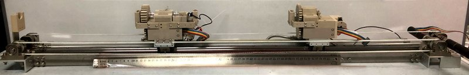
1 / 29

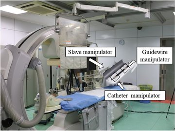

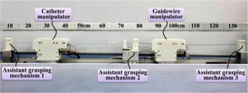

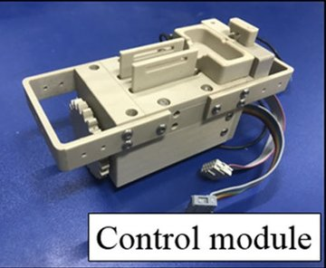

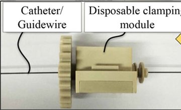

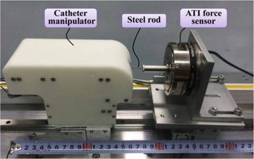

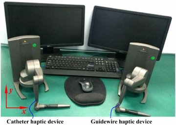

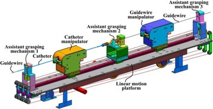

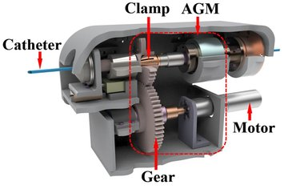

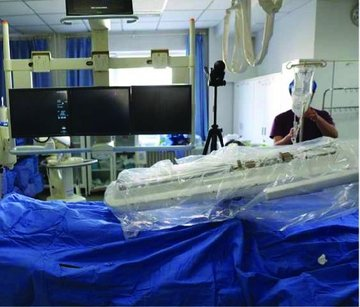

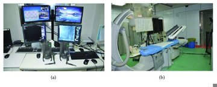

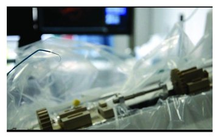

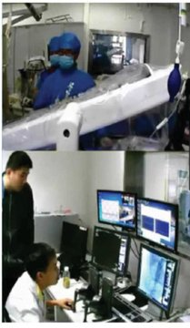

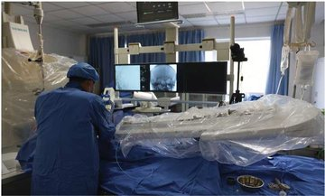

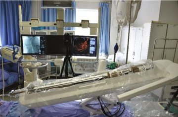

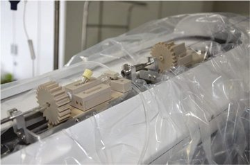

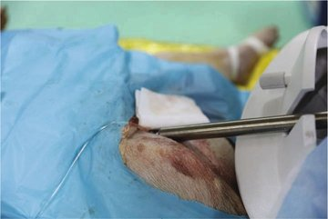

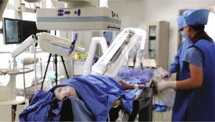

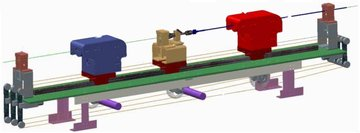

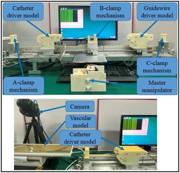

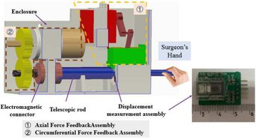

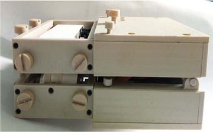

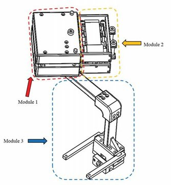

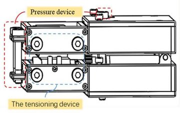

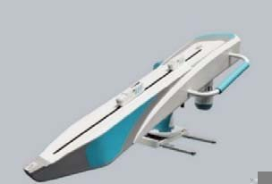

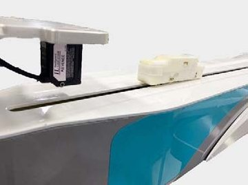

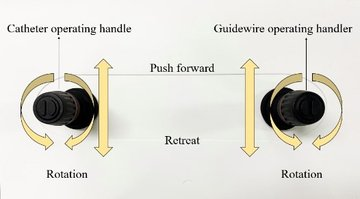

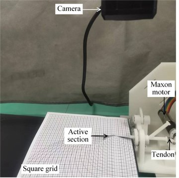

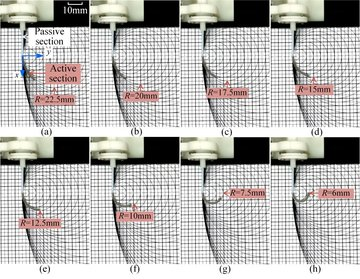
- Family
- Commercial and clinical-stage systems (clinical-stage)
- Devices
- catheter (5 F tested) + guidewire (0.8 mm rod used in rotary test), driven simultaneously by two manipulators on one rail (bao2018 Sec. 4); first patient: 5 F 135-degree angiographic catheter (Cordis) and 0.035-in 150 cm hydrophilic guidewire (Terumo) (jiang2018_initial p. 2); 2021 animals: also Exel-14 microcatheter and 0.014-in micro-guidewire inside the 5 F catheter (liu2021_animal p. 2, 4)
- Degrees of freedom
- 4 (linear + rotary for each of catheter manipulator and guidewire manipulator; bao2018 Table 1)
- Push
- Linear stage
- Twist
- Rotating clamp
- Tested up to
- Human
- Sim-to-real
- None found — No simulation-trained controller found for this robot.
Testing
- Highest level
- Human
- What was tested
- Human: 1 patient (chosen from 5 inpatients with suspected intracranial aneurysm), robot-driven cerebral angiography of both carotid and both vertebral arteries, about 40 min, no complication on 7.0 T MRI at 48 h or at the 7-day follow-up; Beijing Tiantan Hospital, Beijing; local ethics committee approval, no registration stated (jiang2018_initial Secs. 2-4). yang2022 Sec. 2 also cites clinical trials with this robot (Bao et al. 2018, Biomed. Microdevices 20:34, bao2018_operation, not read; patient count N.R.). Animal: 10 Bama miniature pigs (15-20 kg), at least three vessels each (liu2021_animal); pig in vivo trial (yang2019_vascular); dog remote test Kagawa-Beijing via the review chen2023_operating. Phantom: human-body vessel model (bao2018), in vitro model and ex vivo pig aortic arch (bao2022), vascular model 10 of 10 runs to the left subclavian artery (yang2022 Sec. 4.3), 2-D paraffin-wax model (zhou2022 Sec. 4).
- Key numbers
- CM accuracy 0.11 +/- 0.023 mm and 1.43 +/- 0.30 deg; GM 0.12 +/- 0.024 mm and 1.43 +/- 0.28 deg (bao2018 Table 1); range 780 mm at 20 mm/s; max grip force/torque CM 20.2 N / 24.4 mN.m, GM 18.5 N / 21.6 mN.m; leader-follower mean displacement error 0.038-0.241 mm (bao2022 Sec. V); pig in vivo tracking mean 0.22 mm / 0.17 deg (chen2023_operating, secondary); jiang2018: procedure about 40 min, axial accuracy 0.2 mm, rotation 2 deg; liu2021: mean operation 38.8 min, catheter-guidewire switch 2.8 min, axial 0.1 mm, rotation 5 deg; zhou2022: maximum steady errors 0.45 mm and 6.67 deg with kinetics + ADRC
Mechanism
- Push (translation)
- linear-stage+clamp
- Twist (rotation)
- Rotating conical-clamp grasper in each manipulator; assistant grasping mechanisms 1-3 on the rail hold the device while the manipulator returns (bao2018 Figs. 10, 12)
- Device range
- 5 F catheter; guidewire ~0.8 mm (steel-rod test stand); no stated range limits; RobEnt 2018: travel 0.9 m, linear speed up to 90 cm/s, rotation up to 420 deg/s (jiang2018_initial p. 4); 2021: push 1.2 m, < 5 cm/s, < 180 deg/s (liu2021_animal p. 5)
- Target anatomy
- neurovascular: cerebral angiography in a patient (bilateral carotid and vertebral arteries, jiang2018_initial); human body vessel model; pig aortic arch vessels ex vivo
Sensing and interface
- Force sensing
- Proximal axial force per manipulator by strain-gauge sensor behind a low-friction bearing transmission (static connection, to avoid the slip of friction wheels): max relative error 2.53 % (catheter) / 2.48 % (guidewire) vs ATI reference (bao2018 Sec. 5.1). Tip contact: 1.3 mm fibre-optic pressure sensor in a 5 F catheter, 0-0.2 N (guo2019_novel Sec. IV-B).; RobEnt papers: force feedback on the console handle, resistance and vessel contact shown on the console, sensor type N.R. (jiang2018_initial p. 4)
- Leader and haptics
- Bao 2018/2022: two commercial haptic devices (Geomagic Touch X), one per device. Guo 2019: passive magnetorheological-fluid leader around a real 7 F input catheter. Yang 2022: isomorphic leader with real catheter and guidewire as handles. yang2022 detail: catheter and guidewire fixed on their own handle platforms, belt-coupled to encoder motors, with linear-force and torque feedback devices and eccentric force compensation (Sec. 3, Figs. 3-11).; first patient: console with two haptic handles outside the room (jiang2018_initial Fig. 1); zhou2022: optical-mouse master reading axial and circumferential displacement, force feedback N.R.
- Imaging
- X-ray DSA (Siemens Artis zee III in 2018, AXIOM Artis dBA in 2021); robot not connected to the DSA (jiang2018_initial p. 4, 9)
- Sterility
- sterile membrane over the slave, sterilisation time < 1 h (jiang2018_initial p. 4, 6); 2021: disposable sterile waterproof transparent cover and a sleeve at the arterial sheath (liu2021_animal p. 6-7); conical clamp holds the device without damaging its surface (bao2018 Sec. 2.2)
Size
- Footprint (mm)
- rail travel 780 mm (bao2018 Sec. 4.1); overall size N.R.
- Mass (kg)
- N.R.
Simulation
- Simulation model
- Not of the robot. Kagawa/BIT virtual-reality catheter-operation training simulators model catheter-vessel interaction (guo2012_virtual JRM; wang2016_virtual IJMRCAS, abstract level); no robot-drive simulator found.
- Sim-trained controller
- none found
Versions
- Lineage
- Kagawa remote catheter systems incl. remote angiography on a dog Kagawa-Beijing (chen2023_operating, secondary, ~2012) -> guo2016_design (MR-fluid force-feedback catheter system) -> bao2018_cooperation (RVIR-CI: catheter AND guidewire, 780 mm range) -> yang2019_vascular (fuzzy control, in vivo animal) -> bao2022_multilevel (three force zones, two haptic devices); isomorphic leader yang2022_isomorphic (full: real catheter and guidewire as handles on belt-coupled encoder platforms with linear-force and torque feedback, built after surgeons' feedback from in vivo experiments; Sec. 2-3); in-human operation evaluation bao2018_operation (Biomed. Microdevices 20:34, doi:10.1007/s10544-018-0277-5, title via Crossref, cited as ref. 13 of yang2022). Later BIT-Abrobo reciprocating robot (cao2024_reciprocating) became PANVIS-A: A4 scope, not catalogued here.; string-driven multi-slider slave with an optical-mouse master and kinetics + ADRC control (zhou2022_kinetics; its Sec. 2.2 says the slave was evaluated in bao2018_cooperation); RobEnt, the Tiantan team's name for the robot: first patient (jiang2018_initial, 2018) and ten pigs with micro-devices, a disposable waterproof cover and a sheath sleeve (liu2021_animal, 2021); 2011-15: J. Guo / N. Xiao (Kagawa-BIT) robotic catheter system with real-time force feedback: load cell + fibre-optic sensor (Guo 2011, 2012 ROBIO), Xiao 2012, push-force feedback with a mock-handle leader (Xiao 2015 ICIA) (Belikov 2024 Fig. 6 XI) (belikov2024_evolution; chen2023_operating; li2024_design); 2015: Jia / S. Guo (BIT) interventional surgical robot with force feedback, spur-gear rotation and torque-controlled gripper (Jia 2015 ROBIO; follow-ups Guo 2016, Wang 2018, Guo 2018) (Belikov 2024 Fig. 5 JI) (belikov2024_evolution; chen2023_operating); 2016: Bao / S. Guo guidewire navigation robot with fuzzy-PID force control (Bao 2016 ICMA; Guo 2016 ICMA) (Konda 2025 Table 2 row 13) (konda2025_robotically); 2018-20: Y. Zhao / S. Guo slave with on-line acquisition of the operating force by torque measurement (Zhao 2018 Biomed. Microdevices; 2019; 2020) (Belikov 2024 Fig. 6 ZH1) (belikov2024_evolution; chen2023_operating); 2022-24: C. Lyu / S. Guo robot with a flexible tactile-sensing gripper (FTG; lasso-style grip, force estimated from finger bending; Lyu 2023 RA-L) (Alekseeva 2025 Table 9 row 4, Figs. 10k, 14d) (alekseeva2025_design; li2024_design); 2020: N. Xiao (BIT) balloon-catheter delivery module with two geared conveyor belts on the lab's direct-push catheter/guidewire robot with joystick handles, bench (Yuan 2020 ICMA; host robot and operation logic Wang 2020 ICMA) (Alekseeva 2025 Table 4 row 4, Fig. 13b) (yuan2020_design; wang2020_reciprocating; alekseeva2025_design); 2018: S. Guo / N. Xiao (BIT) real-time master-slave (RTMS) system with closed-loop force feedback and a master handle that measures the surgeon's force (Guo 2018 Biomed. Microdevices 20, doi:10.1007/s10544-018-0278-4; Chen 2023 calls its guidewire mechanism heavy) (guo2018_realtime; chen2023_operating); 2019 and 2022: N. Xiao (BIT) sterile-side drive parts: bevel-gear catheter rotation structure for the guidewire operator (K. Wang 2019 ICMA) and a guidewire rotation-and-delivery transmission that limits slip (M. Cheng 2022 ICMA), both bench-tested for accuracy; Belikov codes the 2022 paper CHEs (wang2019_novel; cheng2022_novel; belikov2024_evolution); 2022-24: Y. Yan / S. Guo (BIT) 3-DoF slave with clamping-bracket grippers (PG2 SEA gripper, TIM 2023), grasping-force passive safety method with Changhai Hospital (TIM 2023) and an SEA haptic leader (ICRA 2024), ex vivo phantom per Alekseeva (Alekseeva 2025 Table 8 row 3, Fig. 10h) (alekseeva2025_design; yan2023_seabased; yan2023_grasping; yan2024_novel); 2022: deep-learning guidewire-compliant control (GCCM) run on the BIT endovascular surgery robot platform, slave rebuilt after Y. Zhao 2020 and Bao 2019, Geomagic Touch X leader, acrylic phantom, five operators: operating force -44.0 %, time -24.6 % (Lyu 2022 Micromachines; Konda 2025 control row 32) (lyu2022_deeplearningbased; konda2025_robotically); 2023: Y. Yan / S. Guo (BIT) spring-based tendon-driven steerable catheter for the group's master-slave robot: 1.5 mm active section (support spring with a 20 mm stainless-steel spine, one tendon, silicone coating) on a PTFE-lined passive section; the tendon pulled by a Maxon motor through a rack and pinion, displacement from the motor encoder; bench only, active section bent against a printed circle grid (radii 22.5 to 6 mm), bending radius from tendon displacement with mean absolute error 0.109 mm (6.53 %) (Yan 2023 ICMA, Secs. II-A, III, Figs. 8-10; Alekseeva 2025 Table 15 row 3) (yan2023_novel; alekseeva2025_design); RobEnt: robot of endovascular treatment with force feedback and cooperating catheter and guidewire (built by Beijing Institute of Technology; clinical team Beijing Neurosurgical Institute / Tiantan Hospital); BIT string-driven vascular intervention surgical robotic system (ADRC control)
Sources
- A cooperation of catheters and guidewires-based novel remote-controlled vascular interventional robot · Biomedical Microdevices, 2018 · doi:10.1007/s10544-018-0261-0 [bao2018_cooperation]
- Multilevel Operation Strategy of a Vascular Interventional Robot System for Surgical Safety in Teleoperation · IEEE Transactions on Robotics, 2022 · doi:10.1109/tro.2022.3140887 [bao2022_multilevel]
- A Novel Robot-Assisted Endovascular Catheterization System With Haptic Force Feedback · IEEE Transactions on Robotics, 2019 · doi:10.1109/tro.2019.2896763 [guo2019_novel]
- Design and characteristics evaluation of a novel teleoperated robotic catheterization system with force feedback for vascular interventional surgery · Biomedical Microdevices, 2016 · doi:10.1007/s10544-016-0100-0 [guo2016_design]
- A vascular interventional surgical robot based on surgeon’s operating skills · Medical & Biological Engineering & Computing, 2019 · doi:10.1007/s11517-019-02016-8 [yang2019_vascular]
- An Isomorphic Interactive Device for the Interventional Surgical Robot after In Vivo Study · Micromachines, 2022 · doi:10.3390/mi13010111 [yang2022_isomorphic]
- The Catheter and Guidewire Operating Systems of Vascular Interventional Surgical Robots: A Systematic Review · IEEE Transactions on Medical Robotics and Bionics, 2023 · doi:10.1109/tmrb.2023.3272049 [chen2023_operating]
- Virtual Reality Simulators Based on a Novel Robotic Catheter Operating System for Training in Minimally Invasive Surgery · Journal of Robotics and Mechatronics, 2012 · doi:10.20965/jrm.2012.p0649 [guo2012_virtual]
- A virtual‐reality simulator and force sensation combined catheter operation training system and its preliminary evaluation · The International Journal of Medical Robotics and Computer Assisted Surgery, 2016 · doi:10.1002/rcs.1769 [wang2016_virtual]
- Operation evaluation in-human of a novel remote-controlled vascular interventional robot · Biomedical Microdevices, 2018 · doi:10.1007/s10544-018-0277-5 [bao2018_operation]
- Initial Clinical Trial of Robot of Endovascular Treatment with Force Feedback and Cooperating of Catheter and Guidewire · Applied Bionics and Biomechanics, 2018 · doi:10.1155/2018/9735979 [jiang2018_initial]
- Animal Experiment of a Novel Neurointerventional Surgical Robotic System with Master-Slave Mode · Applied Bionics and Biomechanics, 2021 · doi:10.1155/2021/8836268 [liu2021_animal]
- Kinetics Analysis and ADRC-Based Controller for a String-Driven Vascular Intervention Surgical Robotic System · Micromachines, 2022 · doi:10.3390/mi13050770 [zhou2022_kinetics]
- Evolution and current state of robotic catheters for endovascular surgery: A comprehensive review · Engineering Science and Technology, an International Journal, 2024 · doi:10.1016/j.jestch.2024.101789 [belikov2024_evolution]
- Robotic Systems Design in Endovascular Treatment · IEEE Transactions on Medical Robotics and Bionics, 2024 · doi:10.1109/tmrb.2024.3377374 [li2024_design]
- Robotically steerable guidewires—Current trends and future directions · Science Robotics, 2025 · doi:10.1126/scirobotics.adt7461 [konda2025_robotically]
- The Design of Endovascular Robots for Cardiac Interventions: A Survey · Journal of Field Robotics, 2024 · doi:10.1002/rob.22480 [alekseeva2025_design]
- Design of a Novel Balloon Catheter Delivery Mechanism for the Vascular Interventional Robotic System · 2020 IEEE International Conference on Mechatronics and Automation (ICMA), 2020 · doi:10.1109/icma49215.2020.9233595 [yuan2020_design]
- Reciprocating Operation Method for Vascular Intervention Surgery Robot · 2020 IEEE International Conference on Mechatronics and Automation (ICMA), 2020 · doi:10.1109/ICMA49215.2020.9233703 [wang2020_reciprocating]
- Study on real-time force feedback for a master–slave interventional surgical robotic system · Biomedical Microdevices, 2018 · doi:10.1007/s10544-018-0278-4 [guo2018_realtime]
- A Novel Catheter Rotation Structure for Aseptic Environment of Interventional Surgery Robot · 2019 IEEE International Conference on Mechatronics and Automation (ICMA), 2019 · doi:10.1109/icma.2019.8816446 [wang2019_novel]
- A Novel Guide Wire Rotation and Delivery Structure for Interventional Surgical Robot · 2022 IEEE International Conference on Mechatronics and Automation (ICMA), 2022 · doi:10.1109/icma54519.2022.9856010 [cheng2022_novel]
- SEA-Based Humanoid Finger-Functional Parallel Gripper With Two Actuators: PG2 Gripper · IEEE Transactions on Instrumentation and Measurement, 2023 · doi:10.1109/tim.2022.3229695 [yan2023_seabased]
- Grasping-Force-Based Passive Safety Method for a Vascular Interventional Surgery Robot System · IEEE Transactions on Instrumentation and Measurement, 2023 · doi:10.1109/tim.2023.3309365 [yan2023_grasping]
- A Novel SEA-based Haptic Interface for Robot-Assisted Vascular Interventional Surgery · 2024 IEEE International Conference on Robotics and Automation (ICRA), 2024 · doi:10.1109/icra57147.2024.10611034 [yan2024_novel]
- A Deep-Learning-Based Guidewire Compliant Control Method for the Endovascular Surgery Robot · Micromachines, 2022 · doi:10.3390/mi13122237 [lyu2022_deeplearningbased]
- A Novel Steerable Catheter for Vascular Interventional Surgery · 2023 IEEE International Conference on Mechatronics and Automation (ICMA), 2023 · doi:10.1109/icma57826.2023.10216269 [yan2023_novel]
Notes
- Notes
- Mechanism lesson stated in bao2018 Introduction: friction wheels slip, so proximal force is hard to measure; the group moved to conical-clamp graspers mounted on a force-sensing stage. ren2023_critical Table IV lists 'stroke 780 mm' for the BIT row, which matches bao2018 (the S8 evidence file could not find it in guo2019). | 2026-11-08 X3: highest_validation animal -> human on yang2022 Sec. 2 (clinical trials with this robot) + its ref. 13 (Bao 2018 in-human evaluation). robent_jiang2018 (X2 scope; Jiang, Liu, Li of Tiantan with BIT, first cerebral angiography, ABB 2018) is very likely the same BIT robot: coordinator to decide a merge. Bao 2018 in-human paper (Springer) not downloaded in this round | X4 2026-11-08: robent_jiang2018 and bit_stringdriven_zhou2022 merged into this row (data/merge_map.csv: same group, same one-rail slave, same room and slave in jiang2018 Fig. 1(b) and yang2019 Fig. 4). Category academic -> clinical-stage: a university robot that treated a first patient, filed like the Beihang, Hanyang and Asan robots (paper Secs. II, IV). | N4 2026-11-09: yan2023_novel read in full: the tendon is motor-driven (Sec. III, p. 770: 'actuated by a Maxon motor with a rack and pinion mechanism'), tested on the bench only (in air, against a circle grid; no vessel phantom in the paper, unlike Alekseeva's 'ex vivo phantom'); filed as a version line of this group's row, as Gao 2017 on sia_zhang2025; row cells unchanged; merged from robent_jiang2018 (A2); merged from bit_stringdriven_zhou2022 (A2)
This record
- Read level
- full — full (bao2018_cooperation; yang2022_isomorphic; zhou2022_kinetics; jiang2018_initial; liu2021_animal); partial (bao2022, guo2019); abstract (yang2019); title (bao2018_operation in-human); secondary via review (dog test); full (yan2023_novel, version line)
- Picture
- yang2019_vascular Fig. 4(a) (slave prototype on the linear motion platform), MBEC 2019, doi:10.1007/s11517-019-02016-8 ↗ — licence: publisher copyright; grade B
- Picture changes
- native extract (2057x1090 embedded image); cropped to panel (a); two white callout arrows on the wall and a red highlight around the steel ruler erased (LaMa, machine lock); one arrow-tip fragment on the table covered with adjacent table pixels; not upscaled
- Found by
- academic: Search of academic bedside robots.
- Data
- JSON · YAML:
records/robots/bit_rvirci_bao2022.yaml - Correction
- Suggest a correction [repository not created yet]